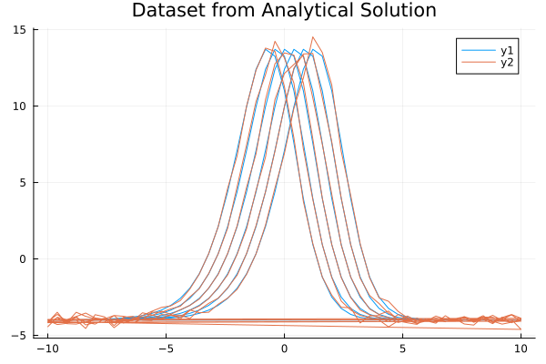
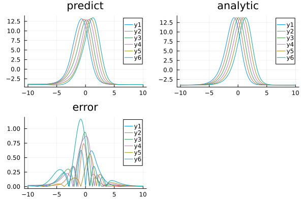

Using ahmc_bayesian_pinn_pde with the BayesianPINN Discretizer for the Kuramoto–Sivashinsky equation
Consider the Kuramoto–Sivashinsky equation:
\[∂_t u(x, t) + u(x, t) ∂_x u(x, t) + \alpha ∂^2_x u(x, t) + \beta ∂^3_x u(x, t) + \gamma ∂^4_x u(x, t) = 0 \, ,\]
where $\alpha = \gamma = 1$ and $\beta = 4$. The exact solution is:
\[u_e(x, t) = 11 + 15 \tanh \theta - 15 \tanh^2 \theta - 15 \tanh^3 \theta \, ,\]
where $\theta = t - x/2$ and with initial and boundary conditions:
\[\begin{align*} u( x, 0) &= u_e( x, 0) \, ,\\ u( 10, t) &= u_e( 10, t) \, ,\\ u(-10, t) &= u_e(-10, t) \, ,\\ ∂_x u( 10, t) &= ∂_x u_e( 10, t) \, ,\\ ∂_x u(-10, t) &= ∂_x u_e(-10, t) \, . \end{align*}\]
With Bayesian Physics-Informed Neural Networks, here is an example of using BayesianPINN discretization with ahmc_bayesian_pinn_pde :
ahmc_bayesian_pinn_pde is provided by the NeuralPDEBPINNExt package extension. To use it, load AdvancedHMC, MCMCChains and LogDensityProblems alongside NeuralPDE:
using ModelingToolkit, NeuralPDE, SciMLBase, AdvancedHMC, MCMCChains, LogDensityProblemsusing ModelingToolkit, NeuralPDE, SciMLBase, AdvancedHMC, MCMCChains, LogDensityProblems,
Lux, ModelingToolkit, LinearAlgebra
using Distributions
import DomainSets: Interval
using IntervalSets: leftendpoint, rightendpoint
using Plots, MonteCarloMeasurements
@parameters x, t, α
@variables u(..)
Dt = Differential(t)
Dx = Differential(x)
Dx2 = Differential(x)^2
Dx3 = Differential(x)^3
Dx4 = Differential(x)^4
# α = 1
β = 4
γ = 1
eq = Dt(u(x, t)) + u(x, t) * Dx(u(x, t)) + α * Dx2(u(x, t)) + β * Dx3(u(x, t)) +
γ * Dx4(u(x, t)) ~ 0
u_analytic(x, t; z = -x / 2 + t) = 11 + 15 * tanh(z) - 15 * tanh(z)^2 - 15 * tanh(z)^3
du(x, t; z = -x / 2 + t) = 15 / 2 * (tanh(z) + 1) * (3 * tanh(z) - 1) * sech(z)^2
bcs = [u(x, 0) ~ u_analytic(x, 0),
u(-10, t) ~ u_analytic(-10, t),
u(10, t) ~ u_analytic(10, t),
Dx(u(-10, t)) ~ du(-10, t),
Dx(u(10, t)) ~ du(10, t)]
# Space and time domains
domains = [x ∈ Interval(-10.0, 10.0),
t ∈ Interval(0.0, 1.0)]
# Discretization
dx = 0.4;
dt = 0.2;
# Function to compute analytical solution at a specific point (x, t)
function u_analytic_point(x, t)
z = -x / 2 + t
return 11 + 15 * tanh(z) - 15 * tanh(z)^2 - 15 * tanh(z)^3
end
# Function to generate the dataset matrix
function generate_dataset_matrix(domains, dx, dt)
x_values = -10:dx:10
t_values = 0.0:dt:1.0
dataset = []
for t in t_values
for x in x_values
u_value = u_analytic_point(x, t)
push!(dataset, [u_value, x, t])
end
end
return vcat([data' for data in dataset]...)
end
datasetpde = [generate_dataset_matrix(domains, dx, dt)]
# noise to dataset
noisydataset = deepcopy(datasetpde)
noisydataset[1][:, 1] = noisydataset[1][:, 1] .+
randn(size(noisydataset[1][:, 1])) .* 5 / 100 .*
noisydataset[1][:, 1]306-element Vector{Float64}:
-4.432634679064588
-3.819662167197756
-3.9698016192537087
-3.766766575683239
-3.5411232910016324
-3.8636170663201614
-3.947098748397834
-4.127542701277052
-3.902633347651312
-3.9945690195678845
⋮
-3.715312878339491
-4.081903618820029
-3.8338639196808977
-4.1431380338748935
-3.945287117290365
-4.232754620390067
-3.805549018421446
-4.174905003777721
-3.9211714374664144Plotting dataset, added noise is set at 5%.
plot(datasetpde[1][:, 2], datasetpde[1][:, 1], title = "Dataset from Analytical Solution")
plot!(noisydataset[1][:, 2], noisydataset[1][:, 1])
# Neural network
chain = Chain(Dense(2, 8, tanh), Dense(8, 8, tanh), Dense(8, 1))
discretization = NeuralPDE.BayesianPINN([chain],
GridTraining([dx, dt]), param_estim = true, dataset = [noisydataset, nothing])
@named pde_system = PDESystem(eq,
bcs,
domains,
[x, t],
[u(x, t)],
[α],
initial_conditions = Dict([α => 0.5]))
sol1 = ahmc_bayesian_pinn_pde(pde_system,
discretization;
draw_samples = 100, Kernel = AdvancedHMC.NUTS(0.8),
bcstd = [0.2, 0.2, 0.2, 0.2, 0.2],
phystd = [1.0], l2std = [0.05], param = [Distributions.LogNormal(0.5, 2)],
priorsNNw = (0.0, 10.0),
saveats = [1 / 100.0, 1 / 100.0], progress = true)BPINNsolution{NeuralPDE.BPINNstats{MCMCChains.Chains{Float64, AxisArrays.AxisArray{Float64, 3, Base.ReshapedArray{Float64, 3, LinearAlgebra.Adjoint{Float64, Matrix{Float64}}, Tuple{Base.MultiplicativeInverses.SignedMultiplicativeInverse{Int64}}}, Tuple{AxisArrays.Axis{:iter, StepRange{Int64, Int64}}, AxisArrays.Axis{:var, Vector{Symbol}}, AxisArrays.Axis{:chain, UnitRange{Int64}}}}, Missing, @NamedTuple{parameters::Vector{Symbol}}, @NamedTuple{}}, Vector{Vector{Float64}}, Vector{NamedTuple}}, Vector{Vector{MonteCarloMeasurements.Particles{Float64, 33}}}, Vector{ComponentArrays.ComponentVector{MonteCarloMeasurements.Particles{Float64, 34}, Vector{MonteCarloMeasurements.Particles{Float64, 34}}, Tuple{ComponentArrays.Axis{(layer_1 = ViewAxis(1:24, Axis(weight = ViewAxis(1:16, ShapedAxis((8, 2))), bias = ViewAxis(17:24, Shaped1DAxis((8,))))), layer_2 = ViewAxis(25:96, Axis(weight = ViewAxis(1:64, ShapedAxis((8, 8))), bias = ViewAxis(65:72, Shaped1DAxis((8,))))), layer_3 = ViewAxis(97:105, Axis(weight = ViewAxis(1:8, ShapedAxis((1, 8))), bias = ViewAxis(9:9, Shaped1DAxis((1,))))))}}}}, Vector{MonteCarloMeasurements.Particles{Float64, 34}}, Vector{Matrix{Float64}}}(NeuralPDE.BPINNstats{MCMCChains.Chains{Float64, AxisArrays.AxisArray{Float64, 3, Base.ReshapedArray{Float64, 3, LinearAlgebra.Adjoint{Float64, Matrix{Float64}}, Tuple{Base.MultiplicativeInverses.SignedMultiplicativeInverse{Int64}}}, Tuple{AxisArrays.Axis{:iter, StepRange{Int64, Int64}}, AxisArrays.Axis{:var, Vector{Symbol}}, AxisArrays.Axis{:chain, UnitRange{Int64}}}}, Missing, @NamedTuple{parameters::Vector{Symbol}}, @NamedTuple{}}, Vector{Vector{Float64}}, Vector{NamedTuple}}(MCMC chain (100×106×1 reshape(adjoint(::Matrix{Float64}), 100, 106, 1) with eltype Float64), [[-1.0141446465171609, 1.90756737562952, 1.5448387787857376, 0.01510651731766698, 1.3523059993019617, -0.7564234768016646, -0.7246796820086068, 1.993417513652097, -0.40195671794520726, 0.7102523042961278 … -0.250611926690941, -0.21050477290954772, 0.08640869454215586, -0.2310299935788246, -0.3948058862107833, -0.4343381023821649, -0.11497776408411066, 0.3408873556265296, 0.18236368226323382, 0.5003758180174888], [-1.0141446465171609, 1.90756737562952, 1.5448387787857376, 0.01510651731766698, 1.3523059993019617, -0.7564234768016646, -0.7246796820086068, 1.993417513652097, -0.40195671794520726, 0.7102523042961278 … -0.250611926690941, -0.21050477290954772, 0.08640869454215586, -0.2310299935788246, -0.3948058862107833, -0.4343381023821649, -0.11497776408411066, 0.3408873556265296, 0.18236368226323382, 0.5003758180174888], [-1.0141446465171609, 1.90756737562952, 1.5448387787857376, 0.01510651731766698, 1.3523059993019617, -0.7564234768016646, -0.7246796820086068, 1.993417513652097, -0.40195671794520726, 0.7102523042961278 … -0.250611926690941, -0.21050477290954772, 0.08640869454215586, -0.2310299935788246, -0.3948058862107833, -0.4343381023821649, -0.11497776408411066, 0.3408873556265296, 0.18236368226323382, 0.5003758180174888], [-1.0136370741164042, 1.905125637259706, 1.5456859919390207, 0.015017517735463792, 1.3519791415312732, -0.7564143397871059, -0.7247127072791135, 1.993168697701041, -0.4006994796166948, 0.7107185706321596 … -0.25150076969149343, -0.20777440915265477, 0.08681385820898449, -0.2319274193417286, -0.3928970884523533, -0.43341549104528165, -0.11674464609570531, 0.3357724970859881, 0.18002195960439732, 0.5008307129727608], [-1.0131893860024235, 1.9004477785226128, 1.546656137813604, 0.01430391137854862, 1.352076508825187, -0.7565915380112229, -0.7246127010728027, 1.9929426820712421, -0.39793205730373743, 0.7111229273658796 … -0.2530619447124529, -0.2026202716998205, 0.0880849605589048, -0.23364325718772191, -0.3895079907707982, -0.4317536392635368, -0.11951921395354598, 0.3279799385904852, 0.17571033276886885, 0.5005275987695349], [-1.0128460085154287, 1.8835062485774108, 1.5496602776711348, 0.010978180720921783, 1.353418828396526, -0.754391498061665, -0.7257566276603827, 1.990021549507751, -0.3861192708044539, 0.7124718915547368 … -0.26157257775601495, -0.17386072881108292, 0.09608803583588073, -0.23940497894797264, -0.36960461608899353, -0.4230825182646588, -0.13344008771890414, 0.29473665563419343, 0.15175520104369258, 0.49984886960787556], [-1.0134198388109346, 1.8817603414470325, 1.5496301024187993, 0.009807346359444488, 1.3541149159404269, -0.7548622595598995, -0.7260122693974277, 1.9884130793542187, -0.38399917506856324, 0.7136297717704568 … -0.264700194724474, -0.16514496516592853, 0.09925076141518828, -0.24119565160265943, -0.36376072758959443, -0.4210735135349228, -0.1373414161327875, 0.2891933083883686, 0.1448660568176862, 0.5000051218451856], [-1.0263817425999402, 1.8555338495518814, 1.5472473848822972, -0.0014708382189685919, 1.3601158378855938, -0.7505911932582063, -0.7243594433301479, 1.9706261031612493, -0.34937758848034284, 0.7229967208999794 … -0.31402845907040744, -0.05450337519175903, 0.13111712821254567, -0.2640974670162061, -0.3016559120301082, -0.38938407375586304, -0.1859744012723204, 0.2287684404557412, 0.05134093993768393, 0.5003677512920716], [-1.0406129790534422, 1.8428170121116616, 1.5454440675896635, -0.00951112687913346, 1.3579493064307282, -0.7347167383950397, -0.7260424964189977, 1.9611707168420256, -0.3312408844432687, 0.7360911298519701 … -0.3618800338868112, 0.032071184053205734, 0.13408353181067315, -0.26990845766748867, -0.28484314995606824, -0.36749897786489866, -0.2185898434783164, 0.20748952499902398, -0.01977086613020272, 0.4990955668139611], [-1.0406129790534422, 1.8428170121116616, 1.5454440675896635, -0.00951112687913346, 1.3579493064307282, -0.7347167383950397, -0.7260424964189977, 1.9611707168420256, -0.3312408844432687, 0.7360911298519701 … -0.3618800338868112, 0.032071184053205734, 0.13408353181067315, -0.26990845766748867, -0.28484314995606824, -0.36749897786489866, -0.2185898434783164, 0.20748952499902398, -0.01977086613020272, 0.4990955668139611] … [-0.9515735395557054, 0.6322184696877267, 0.49306058781002304, 0.5059059306554936, 0.8418505822028576, -0.8381970921625853, -0.5271583358004465, 0.8652629413976276, 0.2522844232571787, 0.1478718854810043 … -3.624149952554466, 3.4053255226563954, 1.2154393698007038, -2.2147629500893786, -1.6145690851330317, 1.1137147384140345, -2.932877452015846, 0.48070290144157046, 0.5599377149218592, 0.6048308501797873], [-0.9514421268103401, 0.6322275457239669, 0.4924164614906064, 0.505856992330519, 0.8416459896884598, -0.8388347650883049, -0.5270181678881422, 0.8642165328535422, 0.2526894903477021, 0.1478317012503913 … -3.6241655124946477, 3.4058212131683008, 1.2151649948086525, -2.2155176268439365, -1.6153852637252608, 1.1148188418927611, -2.9331407798114935, 0.48040738819374146, 0.5595522864925835, 0.6051228409496117], [-0.9514421268103401, 0.6322275457239669, 0.4924164614906064, 0.505856992330519, 0.8416459896884598, -0.8388347650883049, -0.5270181678881422, 0.8642165328535422, 0.2526894903477021, 0.1478317012503913 … -3.6241655124946477, 3.4058212131683008, 1.2151649948086525, -2.2155176268439365, -1.6153852637252608, 1.1148188418927611, -2.9331407798114935, 0.48040738819374146, 0.5595522864925835, 0.6051228409496117], [-0.9514421268103401, 0.6322275457239669, 0.4924164614906064, 0.505856992330519, 0.8416459896884598, -0.8388347650883049, -0.5270181678881422, 0.8642165328535422, 0.2526894903477021, 0.1478317012503913 … -3.6241655124946477, 3.4058212131683008, 1.2151649948086525, -2.2155176268439365, -1.6153852637252608, 1.1148188418927611, -2.9331407798114935, 0.48040738819374146, 0.5595522864925835, 0.6051228409496117], [-0.9515970079216873, 0.6324638169755424, 0.4930246281347611, 0.505555123738387, 0.8416343587670003, -0.838838226793078, -0.5264741036300681, 0.8629780863613997, 0.25510171106103674, 0.14597872872986678 … -3.6255414578895975, 3.4072461091766026, 1.2161418972198488, -2.216205424240677, -1.6171268039099, 1.1157606707898602, -2.933197690650041, 0.4806833973244315, 0.5612674941234815, 0.6065251294395179], [-0.9515970079216873, 0.6324638169755424, 0.4930246281347611, 0.505555123738387, 0.8416343587670003, -0.838838226793078, -0.5264741036300681, 0.8629780863613997, 0.25510171106103674, 0.14597872872986678 … -3.6255414578895975, 3.4072461091766026, 1.2161418972198488, -2.216205424240677, -1.6171268039099, 1.1157606707898602, -2.933197690650041, 0.4806833973244315, 0.5612674941234815, 0.6065251294395179], [-0.9515970079216873, 0.6324638169755424, 0.4930246281347611, 0.505555123738387, 0.8416343587670003, -0.838838226793078, -0.5264741036300681, 0.8629780863613997, 0.25510171106103674, 0.14597872872986678 … -3.6255414578895975, 3.4072461091766026, 1.2161418972198488, -2.216205424240677, -1.6171268039099, 1.1157606707898602, -2.933197690650041, 0.4806833973244315, 0.5612674941234815, 0.6065251294395179], [-0.9515970079216873, 0.6324638169755424, 0.4930246281347611, 0.505555123738387, 0.8416343587670003, -0.838838226793078, -0.5264741036300681, 0.8629780863613997, 0.25510171106103674, 0.14597872872986678 … -3.6255414578895975, 3.4072461091766026, 1.2161418972198488, -2.216205424240677, -1.6171268039099, 1.1157606707898602, -2.933197690650041, 0.4806833973244315, 0.5612674941234815, 0.6065251294395179], [-0.9515970079216873, 0.6324638169755424, 0.4930246281347611, 0.505555123738387, 0.8416343587670003, -0.838838226793078, -0.5264741036300681, 0.8629780863613997, 0.25510171106103674, 0.14597872872986678 … -3.6255414578895975, 3.4072461091766026, 1.2161418972198488, -2.216205424240677, -1.6171268039099, 1.1157606707898602, -2.933197690650041, 0.4806833973244315, 0.5612674941234815, 0.6065251294395179], [-0.9515970079216873, 0.6324638169755424, 0.4930246281347611, 0.505555123738387, 0.8416343587670003, -0.838838226793078, -0.5264741036300681, 0.8629780863613997, 0.25510171106103674, 0.14597872872986678 … -3.6255414578895975, 3.4072461091766026, 1.2161418972198488, -2.216205424240677, -1.6171268039099, 1.1157606707898602, -2.933197690650041, 0.4806833973244315, 0.5612674941234815, 0.6065251294395179]], NamedTuple[(n_steps = 7, is_accept = true, acceptance_rate = 1.0, log_density = -1.9249970574856026e6, hamiltonian_energy = 2.0288896793555622e6, hamiltonian_energy_error = -43765.799360134406, max_hamiltonian_energy_error = -43765.799360134406, tree_depth = 3, numerical_error = false, step_size = 0.000390625, nom_step_size = 0.000390625, is_adapt = true), (n_steps = 1, is_accept = true, acceptance_rate = 0.0, log_density = -1.9249970574856026e6, hamiltonian_energy = 1.9250432857019024e6, hamiltonian_energy_error = 0.0, max_hamiltonian_energy_error = 1.0484519341190705e9, tree_depth = 0, numerical_error = true, step_size = 0.005619339881162803, nom_step_size = 0.005619339881162803, is_adapt = true), (n_steps = 1, is_accept = true, acceptance_rate = 0.0, log_density = -1.9249970574856026e6, hamiltonian_energy = 1.9250408704083054e6, hamiltonian_energy_error = 0.0, max_hamiltonian_energy_error = 10884.063256074442, tree_depth = 0, numerical_error = true, step_size = 0.0009496747438836495, nom_step_size = 0.0009496747438836495, is_adapt = true), (n_steps = 3, is_accept = true, acceptance_rate = 1.0, log_density = -1.918322259173377e6, hamiltonian_energy = 1.9250077069983035e6, hamiltonian_energy_error = -57.29161785566248, max_hamiltonian_energy_error = -57.29161785566248, tree_depth = 2, numerical_error = false, step_size = 9.366851778844944e-5, nom_step_size = 9.366851778844944e-5, is_adapt = true), (n_steps = 3, is_accept = true, acceptance_rate = 1.0, log_density = -1.907929194029192e6, hamiltonian_energy = 1.9182487068099217e6, hamiltonian_energy_error = -138.0913515498396, max_hamiltonian_energy_error = -138.0913515498396, tree_depth = 2, numerical_error = false, step_size = 0.00012669234724529485, nom_step_size = 0.00012669234724529485, is_adapt = true), (n_steps = 3, is_accept = true, acceptance_rate = 1.0, log_density = -1.8714839689482807e6, hamiltonian_energy = 1.9073544863745645e6, hamiltonian_energy_error = -622.647038947558, max_hamiltonian_energy_error = -622.647038947558, tree_depth = 2, numerical_error = false, step_size = 0.00019812717915982324, nom_step_size = 0.00019812717915982324, is_adapt = true), (n_steps = 1, is_accept = true, acceptance_rate = 1.0, log_density = -1.8644031881351848e6, hamiltonian_energy = 1.8713656384510237e6, hamiltonian_energy_error = -182.46507512568496, max_hamiltonian_energy_error = -182.46507512568496, tree_depth = 1, numerical_error = false, step_size = 0.00033725636586078933, nom_step_size = 0.00033725636586078933, is_adapt = true), (n_steps = 3, is_accept = true, acceptance_rate = 1.0, log_density = -1.7985884234742462e6, hamiltonian_energy = 1.86234919660916e6, hamiltonian_energy_error = -2108.2188352281228, max_hamiltonian_energy_error = -2108.2188352281228, tree_depth = 2, numerical_error = false, step_size = 0.0006034987400113899, nom_step_size = 0.0006034987400113899, is_adapt = true), (n_steps = 1, is_accept = true, acceptance_rate = 1.0, log_density = -1.7594085308445515e6, hamiltonian_energy = 1.7984339185935208e6, hamiltonian_energy_error = -213.0367597967852, max_hamiltonian_energy_error = -213.0367597967852, tree_depth = 1, numerical_error = false, step_size = 0.0011112651181558904, nom_step_size = 0.0011112651181558904, is_adapt = true), (n_steps = 1, is_accept = true, acceptance_rate = 0.0, log_density = -1.7594085308445515e6, hamiltonian_energy = 1.7594746302985211e6, hamiltonian_energy_error = 0.0, max_hamiltonian_energy_error = 9114.873916877434, tree_depth = 0, numerical_error = true, step_size = 0.00207715441457254, nom_step_size = 0.00207715441457254, is_adapt = true) … (n_steps = 7, is_accept = true, acceptance_rate = 0.003969775755148491, log_density = -11690.432557188076, hamiltonian_energy = 11749.869242511384, hamiltonian_energy_error = 0.0, max_hamiltonian_energy_error = 1691.0579038369633, tree_depth = 2, numerical_error = true, step_size = 0.00047185074207092067, nom_step_size = 0.00047185074207092067, is_adapt = false), (n_steps = 8, is_accept = true, acceptance_rate = 0.14296578178867853, log_density = -11669.995734879809, hamiltonian_energy = 11735.869332703089, hamiltonian_energy_error = -0.22705813121865503, max_hamiltonian_energy_error = 2074.7410077641, tree_depth = 3, numerical_error = true, step_size = 0.00047185074207092067, nom_step_size = 0.00047185074207092067, is_adapt = false), (n_steps = 5, is_accept = true, acceptance_rate = 9.618162309158278e-5, log_density = -11669.995734879809, hamiltonian_energy = 11715.143510995951, hamiltonian_energy_error = 0.0, max_hamiltonian_energy_error = 1465.2307906647839, tree_depth = 2, numerical_error = true, step_size = 0.00047185074207092067, nom_step_size = 0.00047185074207092067, is_adapt = false), (n_steps = 7, is_accept = true, acceptance_rate = 0.0036460885954491718, log_density = -11669.995734879809, hamiltonian_energy = 11725.71760526148, hamiltonian_energy_error = 0.0, max_hamiltonian_energy_error = 481.7625820525918, tree_depth = 3, numerical_error = false, step_size = 0.00047185074207092067, nom_step_size = 0.00047185074207092067, is_adapt = false), (n_steps = 7, is_accept = true, acceptance_rate = 0.2956083898486242, log_density = -11587.34599487592, hamiltonian_energy = 11722.086188101279, hamiltonian_energy_error = -0.1009414611471584, max_hamiltonian_energy_error = 33.765830982183616, tree_depth = 3, numerical_error = false, step_size = 0.00047185074207092067, nom_step_size = 0.00047185074207092067, is_adapt = false), (n_steps = 9, is_accept = true, acceptance_rate = 0.0159355163753515, log_density = -11587.34599487592, hamiltonian_energy = 11643.455881208569, hamiltonian_energy_error = 0.0, max_hamiltonian_energy_error = 3109.779297343035, tree_depth = 3, numerical_error = true, step_size = 0.00047185074207092067, nom_step_size = 0.00047185074207092067, is_adapt = false), (n_steps = 9, is_accept = true, acceptance_rate = 0.0006636305895559671, log_density = -11587.34599487592, hamiltonian_energy = 11661.075765871108, hamiltonian_energy_error = 0.0, max_hamiltonian_energy_error = 2925.727717543603, tree_depth = 3, numerical_error = true, step_size = 0.00047185074207092067, nom_step_size = 0.00047185074207092067, is_adapt = false), (n_steps = 5, is_accept = true, acceptance_rate = 0.00018225044633608093, log_density = -11587.34599487592, hamiltonian_energy = 11646.594526240993, hamiltonian_energy_error = 0.0, max_hamiltonian_energy_error = 1085.7392813104361, tree_depth = 2, numerical_error = true, step_size = 0.00047185074207092067, nom_step_size = 0.00047185074207092067, is_adapt = false), (n_steps = 7, is_accept = true, acceptance_rate = 7.765335983530833e-5, log_density = -11587.34599487592, hamiltonian_energy = 11639.906044630654, hamiltonian_energy_error = 0.0, max_hamiltonian_energy_error = 427.43236547363813, tree_depth = 3, numerical_error = false, step_size = 0.00047185074207092067, nom_step_size = 0.00047185074207092067, is_adapt = false), (n_steps = 8, is_accept = true, acceptance_rate = 0.0626387871512905, log_density = -11587.34599487592, hamiltonian_energy = 11641.167784013625, hamiltonian_energy_error = 0.0, max_hamiltonian_energy_error = 3177.9745753678235, tree_depth = 3, numerical_error = true, step_size = 0.00047185074207092067, nom_step_size = 0.00047185074207092067, is_adapt = false)]), Vector{MonteCarloMeasurements.Particles{Float64, 33}}[[-3.98 ± 0.0052, -3.98 ± 0.0052, -3.98 ± 0.0052, -3.98 ± 0.0052, -3.98 ± 0.0052, -3.98 ± 0.0052, -3.98 ± 0.0052, -3.98 ± 0.0052, -3.98 ± 0.0052, -3.98 ± 0.0052 … -4.01 ± 0.0026, -4.01 ± 0.0026, -4.01 ± 0.0026, -4.01 ± 0.0026, -4.01 ± 0.0026, -4.01 ± 0.0026, -4.01 ± 0.0026, -4.01 ± 0.0026, -4.01 ± 0.0026, -4.01 ± 0.0026]], ComponentArrays.ComponentVector{MonteCarloMeasurements.Particles{Float64, 34}, Vector{MonteCarloMeasurements.Particles{Float64, 34}}, Tuple{ComponentArrays.Axis{(layer_1 = ViewAxis(1:24, Axis(weight = ViewAxis(1:16, ShapedAxis((8, 2))), bias = ViewAxis(17:24, Shaped1DAxis((8,))))), layer_2 = ViewAxis(25:96, Axis(weight = ViewAxis(1:64, ShapedAxis((8, 8))), bias = ViewAxis(65:72, Shaped1DAxis((8,))))), layer_3 = ViewAxis(97:105, Axis(weight = ViewAxis(1:8, ShapedAxis((1, 8))), bias = ViewAxis(9:9, Shaped1DAxis((1,))))))}}}[(layer_1 = (weight = MonteCarloMeasurements.Particles{Float64, 34}[-0.953 ± 0.0018 0.251 ± 0.0022; 0.631 ± 0.0011 0.151 ± 0.0037; … ; -0.527 ± 0.00089 1.55 ± 0.0014; 0.867 ± 0.0029 -1.18 ± 0.00061], bias = MonteCarloMeasurements.Particles{Float64, 34}[-0.513 ± 0.0024, 0.689 ± 0.0035, 0.972 ± 0.0058, 0.207 ± 0.0034, -0.15 ± 0.0016, 0.535 ± 0.0016, -0.822 ± 0.0011, -0.175 ± 0.0036]), layer_2 = (weight = MonteCarloMeasurements.Particles{Float64, 34}[-0.606 ± 0.002 -0.76 ± 0.0027 … 0.968 ± 0.0033 -0.252 ± 0.0028; -0.615 ± 0.0019 0.0941 ± 0.00092 … -0.775 ± 0.0039 -0.319 ± 0.0014; … ; 0.0869 ± 0.00059 -0.328 ± 0.001 … 0.316 ± 0.0014 0.91 ± 0.0007; -0.531 ± 0.00083 0.629 ± 0.0034 … -0.722 ± 0.0012 0.37 ± 0.0017], bias = MonteCarloMeasurements.Particles{Float64, 34}[0.476 ± 0.0041, -0.72 ± 0.0051, 0.28 ± 0.00079, -0.17 ± 0.0018, -0.0408 ± 0.0023, 0.422 ± 0.0012, 0.849 ± 0.0006, -0.41 ± 0.0023]), layer_3 = (weight = MonteCarloMeasurements.Particles{Float64, 34}[-3.62 ± 0.0042 3.4 ± 0.0032 … -2.93 ± 0.0037 0.479 ± 0.0016], bias = MonteCarloMeasurements.Particles{Float64, 34}[0.558 ± 0.0024]))], MonteCarloMeasurements.Particles{Float64, 34}[0.603 ± 0.0031], [[-10.0 -9.99 … 9.99 10.0; 0.0 0.0 … 1.0 1.0]])And some analysis:
phi = discretization.phi[1]
xs,
ts = [leftendpoint(d.domain):dx:rightendpoint(d.domain)
for (d, dx) in zip(domains, [dx / 10, dt])]
u_predict = [[first(pmean(phi([x, t], sol1.estimated_nn_params[1]))) for x in xs]
for t in ts]
u_real = [[u_analytic(x, t) for x in xs] for t in ts]
diff_u = [[abs(u_analytic(x, t) - first(pmean(phi([x, t], sol1.estimated_nn_params[1]))))
for x in xs]
for t in ts]
p1 = plot(xs, u_predict, title = "predict")
p2 = plot(xs, u_real, title = "analytic")
p3 = plot(xs, diff_u, title = "error")
plot(p1, p2, p3)